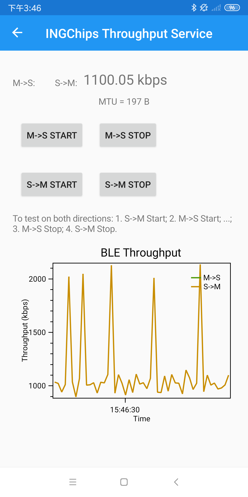
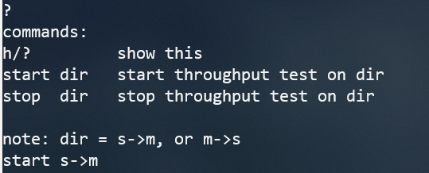
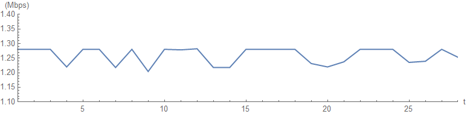

INGChips 为客户提供易用的 SDK，帮助客户便捷、高效地开发蓝牙产品。

BLE 5.0 引入了 2M Sym/s 的无编码物理层。
理论峰值速率
BLE 连接状态下，单个数据包有效载荷最长 251 字节，2M 模式下，数据包空口时长为 1048 us；空包空口时长为 44 us。 当一个方向上持续发送 251 字节的数据包，而另一方向上只发送空包时，可以到达单向速率的理论最高值。此时， 发送 251 字节所消耗的总时间为：
所以链路层所能提供的理论峰值速率为：
对于工作于 GATT 之上的应用程序，扣除 I2CAP、ATT 各层的开销，典型情况下单个数据包中 GATT 最大有效载荷为 251 - 7 = 244 字节。所以 GATT 能为应用程序提供的理论峰值速率为：
速率实测
SDK 中包含了一组用于测试双向吞吐率的程序。

与手机对测
先下载 peripheral_throughput 程序。通过 ING BLE app 连接到名为 ING Tpt 的蓝牙设备，
进入吞吐率测试界面，在这里既可以进行主设备到从设备、从设备到主设备的单向测试，也可以同时进行双向测试。
下图是使用某支持 BLE 5.0 的 Android 手机测得的速率，从模块到手机可获得 1M+ bps 的传输速率。

模块对测
central_throughput 程序演示了 BLE 主设备典型的工作流程：
- 扫描到支持吞吐率服务（service）的设备后，与其建立连接；
- 发现设备上的吞吐率服务；
- 发现服务包含的特性（characteristics）；
- 发现特性的描述符（descriptor）。
吞吐率服务包含两个特性：
-
输出：从设备通过该特性向主设备发送测试数据
该特性包含
Client Characteristic Configuration描述符。 -
输入：主设备通过该特性向从设备发送测试数据
将 central_throughput 下载到另一模块，连接串口工具。输入“?” （注意：需要在行末附加回车、换行）
可以查看程序支持的测试控制命令。程序搜索到 peripheral_throughput 后会自动连接，输入“start s->m”
即可开始测试从主设备到从设备的吞吐率。

下图显示在两个模块之间稳定获得了 1.2M+ bps 的传输速率：

注：上述速率为空口实测，比理论值略低，但更接近实际。
INGChips 918xx 通过 BLE 2M 物理层带来的 1.2M+ “实感”速率无疑可以为 BLE 开拓更多的应用场景。